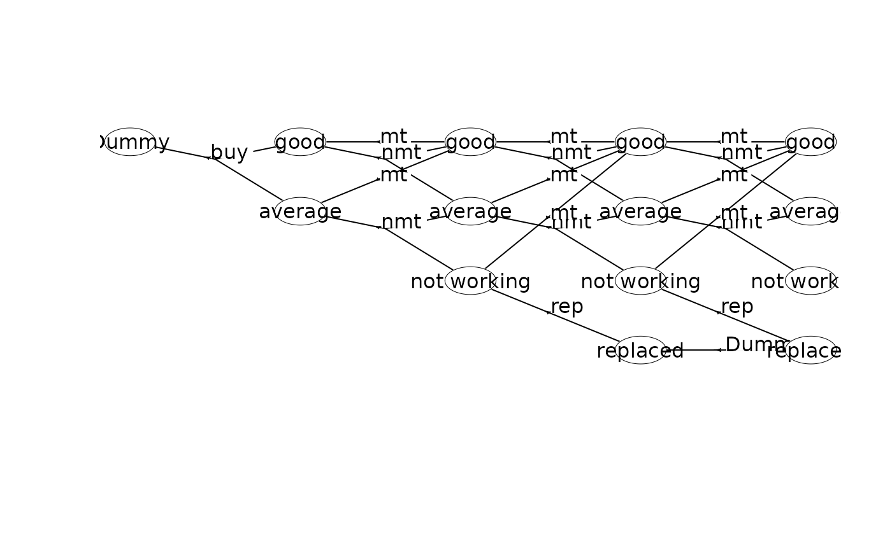

Information about the MDP
Usage
getInfo(
mdp,
sId = 1:ifelse(mdp$timeHorizon < Inf, mdp$states, mdp$states + mdp$founderStatesLast) -
1,
stateStr = NULL,
stageStr = NULL,
withList = TRUE,
withDF = TRUE,
dfLevel = "state",
asStringsState = TRUE,
asStringsActions = FALSE,
withHarc = FALSE
)Arguments
- mdp
The MDP loaded using
loadMDP().- sId
The id of the state(s) considered.
- stateStr
A character vector containing the index of the state(s) (e.g. "n0,s0,a0,n1,s1"). Parameter
sIdare ignored if not NULL.- stageStr
A character vector containing the index of the stage(s) (e.g. "n0,s0,a0,n1"). Parameter
sIdandidxSare ignored if not NULL.- withList
Output info as a list
lst.- withDF
Output the info as a data frame.
- dfLevel
If
withDFand equal"state"the data frame contains a row for each state. If equal"action"the data frame contains a row for each action.- asStringsState
Write state vector as a string; otherwise, output it as columns.
- asStringsActions
Write action vectors (weights, transitions and probabilities) as strings; otherwise, output it as columns.
- withHarc
Output a hyperarcs data frame. Each row contains a hyperarc with the first column denoting the head (
sId), the tails (sId) and the label.
Examples
## Set working dir
wd <- setwd(tempdir())
# Create the small machine repleacement problem used as an example in L.R. Nielsen and A.R.
# Kristensen. Finding the K best policies in a finite-horizon Markov decision process. European
# Journal of Operational Research, 175(2):1164-1179, 2006. doi:10.1016/j.ejor.2005.06.011.
## Create the MDP using a dummy replacement node
prefix<-"machine1_"
w <- binaryMDPWriter(prefix)
w$setWeights(c("Net reward"))
w$process()
w$stage() # stage n=0
w$state(label="Dummy") # v=(0,0)
w$action(label="buy", weights=-100, prob=c(1,0,0.7, 1,1,0.3), end=TRUE)
w$endState()
w$endStage()
w$stage() # stage n=1
w$state(label="good") # v=(1,0)
w$action(label="mt", weights=55, prob=c(1,0,1), end=TRUE)
w$action(label="nmt", weights=70, prob=c(1,0,0.6, 1,1,0.4), end=TRUE)
w$endState()
w$state(label="average") # v=(1,1)
w$action(label="mt", weights=40, prob=c(1,0,1), end=TRUE)
w$action(label="nmt", weights=50, prob=c(1,1,0.6, 1,2,0.4), end=TRUE)
w$endState()
w$endStage()
w$stage() # stage n=2
w$state(label="good") # v=(2,0)
w$action(label="mt", weights=55, prob=c(1,0,1), end=TRUE)
w$action(label="nmt", weights=70, prob=c(1,0,0.5, 1,1,0.5), end=TRUE)
w$endState()
w$state(label="average") # v=(2,1)
w$action(label="mt", weights=40, prob=c(1,0,1), end=TRUE)
w$action(label="nmt", weights=50, prob=c(1,1,0.5, 1,2,0.5), end=TRUE)
w$endState()
w$state(label="not working") # v=(2,2)
w$action(label="mt", weights=30, prob=c(1,0,1), end=TRUE)
w$action(label="rep", weights=5, prob=c(1,3,1), end=TRUE)
w$endState()
w$endStage()
w$stage() # stage n=3
w$state(label="good") # v=(3,0)
w$action(label="mt", weights=55, prob=c(1,0,1), end=TRUE)
w$action(label="nmt", weights=70, prob=c(1,0,0.2, 1,1,0.8), end=TRUE)
w$endState()
w$state(label="average") # v=(3,1)
w$action(label="mt", weights=40, prob=c(1,0,1), end=TRUE)
w$action(label="nmt", weights=50, prob=c(1,1,0.2, 1,2,0.8), end=TRUE)
w$endState()
w$state(label="not working") # v=(3,2)
w$action(label="mt", weights=30, prob=c(1,0,1), end=TRUE)
w$action(label="rep", weights=5, prob=c(1,3,1), end=TRUE)
w$endState()
w$state(label="replaced") # v=(3,3)
w$action(label="Dummy", weights=0, prob=c(1,3,1), end=TRUE)
w$endState()
w$endStage()
w$stage() # stage n=4
w$state(label="good", end=TRUE) # v=(4,0)
w$state(label="average", end=TRUE) # v=(4,1)
w$state(label="not working", end=TRUE) # v=(4,2)
w$state(label="replaced", end=TRUE) # v=(4,3)
w$endStage()
w$endProcess()
w$closeWriter()
#>
#> Statistics:
#> states : 14
#> actions: 18
#> weights: 1
#>
#> Closing binary MDP writer.
#>
## Load the model into memory
mdp<-loadMDP(prefix)
#> Read binary files (0.000152699 sec.)
#> Build the HMDP (4.76e-05 sec.)
#> Checking MDP and found no errors (1.1e-06 sec.)
mdp
#> $binNames
#> [1] "machine1_stateIdx.bin" "machine1_stateIdxLbl.bin"
#> [3] "machine1_actionIdx.bin" "machine1_actionIdxLbl.bin"
#> [5] "machine1_actionWeight.bin" "machine1_actionWeightLbl.bin"
#> [7] "machine1_transProb.bin" "machine1_externalProcesses.bin"
#>
#> $timeHorizon
#> [1] 5
#>
#> $states
#> [1] 14
#>
#> $founderStatesLast
#> [1] 4
#>
#> $actions
#> [1] 18
#>
#> $levels
#> [1] 1
#>
#> $weightNames
#> [1] "Net reward"
#>
#> $ptr
#> C++ object <0x55d637dc17c0> of class 'HMDP' <0x55d6339dc070>
#>
#> attr(,"class")
#> [1] "HMDP" "list"
plot(mdp)

getInfo(mdp, withList = FALSE)
#> $df
#> # A tibble: 14 × 4
#> sId stateStr label actions
#> <dbl> <chr> <chr> <list>
#> 1 0 4,0 good <NULL>
#> 2 1 4,1 average <NULL>
#> 3 2 4,2 not working <NULL>
#> 4 3 4,3 replaced <NULL>
#> 5 4 3,0 good <list [2]>
#> 6 5 3,1 average <list [2]>
#> 7 6 3,2 not working <list [2]>
#> 8 7 3,3 replaced <list [1]>
#> 9 8 2,0 good <list [2]>
#> 10 9 2,1 average <list [2]>
#> 11 10 2,2 not working <list [2]>
#> 12 11 1,0 good <list [2]>
#> 13 12 1,1 average <list [2]>
#> 14 13 0,0 Dummy <list [1]>
#>
getInfo(mdp, withList = FALSE, dfLevel = "action", asStringsActions = TRUE)
#> $df
#> # A tibble: 18 × 8
#> sId stateStr label aIdx label_action weights trans pr
#> <dbl> <chr> <chr> <dbl> <chr> <chr> <chr> <chr>
#> 1 4 3,0 good 0 mt 55 0 1
#> 2 4 3,0 good 1 nmt 70 0,1 0.2,0.8
#> 3 5 3,1 average 0 mt 40 0 1
#> 4 5 3,1 average 1 nmt 50 1,2 0.2,0.8
#> 5 6 3,2 not working 0 mt 30 0 1
#> 6 6 3,2 not working 1 rep 5 3 1
#> 7 7 3,3 replaced 0 Dummy 0 3 1
#> 8 8 2,0 good 0 mt 55 4 1
#> 9 8 2,0 good 1 nmt 70 4,5 0.5,0.5
#> 10 9 2,1 average 0 mt 40 4 1
#> 11 9 2,1 average 1 nmt 50 5,6 0.5,0.5
#> 12 10 2,2 not working 0 mt 30 4 1
#> 13 10 2,2 not working 1 rep 5 7 1
#> 14 11 1,0 good 0 mt 55 8 1
#> 15 11 1,0 good 1 nmt 70 8,9 0.6,0.4
#> 16 12 1,1 average 0 mt 40 8 1
#> 17 12 1,1 average 1 nmt 50 9,10 0.6,0.4
#> 18 13 0,0 Dummy 0 buy -100 11,12 0.7,0.3
#>
getInfo(mdp, withList = FALSE, dfLevel = "action", asStringsActions = FALSE)
#> $df
#> # A tibble: 18 × 8
#> sId stateStr label aIdx label_action weights trans pr
#> <dbl> <chr> <chr> <dbl> <chr> <dbl> <list> <list>
#> 1 4 3,0 good 0 mt 55 <dbl [1]> <dbl [1]>
#> 2 4 3,0 good 1 nmt 70 <dbl [2]> <dbl [2]>
#> 3 5 3,1 average 0 mt 40 <dbl [1]> <dbl [1]>
#> 4 5 3,1 average 1 nmt 50 <dbl [2]> <dbl [2]>
#> 5 6 3,2 not working 0 mt 30 <dbl [1]> <dbl [1]>
#> 6 6 3,2 not working 1 rep 5 <dbl [1]> <dbl [1]>
#> 7 7 3,3 replaced 0 Dummy 0 <dbl [1]> <dbl [1]>
#> 8 8 2,0 good 0 mt 55 <dbl [1]> <dbl [1]>
#> 9 8 2,0 good 1 nmt 70 <dbl [2]> <dbl [2]>
#> 10 9 2,1 average 0 mt 40 <dbl [1]> <dbl [1]>
#> 11 9 2,1 average 1 nmt 50 <dbl [2]> <dbl [2]>
#> 12 10 2,2 not working 0 mt 30 <dbl [1]> <dbl [1]>
#> 13 10 2,2 not working 1 rep 5 <dbl [1]> <dbl [1]>
#> 14 11 1,0 good 0 mt 55 <dbl [1]> <dbl [1]>
#> 15 11 1,0 good 1 nmt 70 <dbl [2]> <dbl [2]>
#> 16 12 1,1 average 0 mt 40 <dbl [1]> <dbl [1]>
#> 17 12 1,1 average 1 nmt 50 <dbl [2]> <dbl [2]>
#> 18 13 0,0 Dummy 0 buy -100 <dbl [2]> <dbl [2]>
#>
## Perform value iteration
w<-"Net reward" # label of the weight we want to optimize
scrapValues<-c(30,10,5,0) # scrap values (the values of the 4 states at stage 4)
runValueIte(mdp, w, termValues=scrapValues)
#> Run value iteration with epsilon = 0 at most 1 time(s)
#> using quantity 'Net reward' under reward criterion.
#> Finished. Cpu time 8.6e-06 sec.
getPolicy(mdp) # optimal policy
#> # A tibble: 14 × 6
#> sId stateStr stateLabel aIdx actionLabel weight
#> <dbl> <chr> <chr> <int> <chr> <dbl>
#> 1 0 4,0 good -1 "" 30
#> 2 1 4,1 average -1 "" 10
#> 3 2 4,2 not working -1 "" 5
#> 4 3 4,3 replaced -1 "" 0
#> 5 4 3,0 good 0 "mt" 85
#> 6 5 3,1 average 0 "mt" 70
#> 7 6 3,2 not working 0 "mt" 60
#> 8 7 3,3 replaced 0 "Dummy" 0
#> 9 8 2,0 good 1 "nmt" 148.
#> 10 9 2,1 average 0 "mt" 125
#> 11 10 2,2 not working 0 "mt" 115
#> 12 11 1,0 good 1 "nmt" 208.
#> 13 12 1,1 average 0 "mt" 188.
#> 14 13 0,0 Dummy 0 "buy" 102.
## Calculate the weights of the policy always to maintain
library(magrittr)
policy <- getInfo(mdp, withList = FALSE, dfLevel = "action")$df %>%
dplyr::filter(label_action == "mt") %>%
dplyr::select(sId, aIdx)
setPolicy(mdp, policy)
runCalcWeights(mdp, w, termValues=scrapValues)
getPolicy(mdp)
#> # A tibble: 14 × 6
#> sId stateStr stateLabel aIdx actionLabel weight
#> <dbl> <chr> <chr> <int> <chr> <dbl>
#> 1 0 4,0 good -1 "" 30
#> 2 1 4,1 average -1 "" 10
#> 3 2 4,2 not working -1 "" 5
#> 4 3 4,3 replaced -1 "" 0
#> 5 4 3,0 good 0 "mt" 85
#> 6 5 3,1 average 0 "mt" 70
#> 7 6 3,2 not working 0 "mt" 60
#> 8 7 3,3 replaced 0 "Dummy" 0
#> 9 8 2,0 good 0 "mt" 140
#> 10 9 2,1 average 0 "mt" 125
#> 11 10 2,2 not working 0 "mt" 115
#> 12 11 1,0 good 0 "mt" 195
#> 13 12 1,1 average 0 "mt" 180
#> 14 13 0,0 Dummy 0 "buy" 90.5
# The example given in L.R. Nielsen and A.R. Kristensen. Finding the K best
# policies in a finite-horizon Markov decision process. European Journal of
# Operational Research, 175(2):1164-1179, 2006. doi:10.1016/j.ejor.2005.06.011,
# does actually not have any dummy replacement node as in the MDP above. The same
# model can be created using a single dummy node at the end of the process.
## Create the MDP using a single dummy node
prefix<-"machine2_"
w <- binaryMDPWriter(prefix)
w$setWeights(c("Net reward"))
w$process()
w$stage() # stage n=0
w$state(label="Dummy") # v=(0,0)
w$action(label="buy", weights=-100, prob=c(1,0,0.7, 1,1,0.3), end=TRUE)
w$endState()
w$endStage()
w$stage() # stage n=1
w$state(label="good") # v=(1,0)
w$action(label="mt", weights=55, prob=c(1,0,1), end=TRUE)
w$action(label="nmt", weights=70, prob=c(1,0,0.6, 1,1,0.4), end=TRUE)
w$endState()
w$state(label="average") # v=(1,1)
w$action(label="mt", weights=40, prob=c(1,0,1), end=TRUE)
w$action(label="nmt", weights=50, prob=c(1,1,0.6, 1,2,0.4), end=TRUE)
w$endState()
w$endStage()
w$stage() # stage n=2
w$state(label="good") # v=(2,0)
w$action(label="mt", weights=55, prob=c(1,0,1), end=TRUE)
w$action(label="nmt", weights=70, prob=c(1,0,0.5, 1,1,0.5), end=TRUE)
w$endState()
w$state(label="average") # v=(2,1)
w$action(label="mt", weights=40, prob=c(1,0,1), end=TRUE)
w$action(label="nmt", weights=50, prob=c(1,1,0.5, 1,2,0.5), end=TRUE)
w$endState()
w$state(label="not working") # v=(2,2)
w$action(label="mt", weights=30, prob=c(1,0,1), end=TRUE)
w$action(label="rep", weights=5, prob=c(3,12,1), end=TRUE) # transition to sId=12 (Dummy)
w$endState()
w$endStage()
w$stage() # stage n=3
w$state(label="good") # v=(3,0)
w$action(label="mt", weights=55, prob=c(1,0,1), end=TRUE)
w$action(label="nmt", weights=70, prob=c(1,0,0.2, 1,1,0.8), end=TRUE)
w$endState()
w$state(label="average") # v=(3,1)
w$action(label="mt", weights=40, prob=c(1,0,1), end=TRUE)
w$action(label="nmt", weights=50, prob=c(1,1,0.2, 1,2,0.8), end=TRUE)
w$endState()
w$state(label="not working") # v=(3,2)
w$action(label="mt", weights=30, prob=c(1,0,1), end=TRUE)
w$action(label="rep", weights=5, prob=c(3,12,1), end=TRUE)
w$endState()
w$endStage()
w$stage() # stage n=4
w$state(label="good") # v=(4,0)
w$action(label="rep", weights=30, prob=c(1,0,1), end=TRUE)
w$endState()
w$state(label="average") # v=(4,1)
w$action(label="rep", weights=10, prob=c(1,0,1), end=TRUE)
w$endState()
w$state(label="not working") # v=(4,2)
w$action(label="rep", weights=5, prob=c(1,0,1), end=TRUE)
w$endState()
w$endStage()
w$stage() # stage n=5
w$state(label="Dummy", end=TRUE) # v=(5,0)
w$endStage()
w$endProcess()
w$closeWriter()
#>
#> Statistics:
#> states : 13
#> actions: 20
#> weights: 1
#>
#> Closing binary MDP writer.
#>
## Have a look at the state-expanded hypergraph
mdp<-loadMDP(prefix)
#> Read binary files (0.000154599 sec.)
#> Build the HMDP (4.72e-05 sec.)
#> Checking MDP and found no errors (1.3e-06 sec.)
mdp
#> $binNames
#> [1] "machine2_stateIdx.bin" "machine2_stateIdxLbl.bin"
#> [3] "machine2_actionIdx.bin" "machine2_actionIdxLbl.bin"
#> [5] "machine2_actionWeight.bin" "machine2_actionWeightLbl.bin"
#> [7] "machine2_transProb.bin" "machine2_externalProcesses.bin"
#>
#> $timeHorizon
#> [1] 6
#>
#> $states
#> [1] 13
#>
#> $founderStatesLast
#> [1] 1
#>
#> $actions
#> [1] 20
#>
#> $levels
#> [1] 1
#>
#> $weightNames
#> [1] "Net reward"
#>
#> $ptr
#> C++ object <0x55d6376c7be0> of class 'HMDP' <0x55d6339dc070>
#>
#> attr(,"class")
#> [1] "HMDP" "list"
plot(mdp)
getInfo(mdp, withList = FALSE)
#> $df
#> # A tibble: 13 × 4
#> sId stateStr label actions
#> <dbl> <chr> <chr> <list>
#> 1 0 5,0 Dummy <NULL>
#> 2 1 4,0 good <list [1]>
#> 3 2 4,1 average <list [1]>
#> 4 3 4,2 not working <list [1]>
#> 5 4 3,0 good <list [2]>
#> 6 5 3,1 average <list [2]>
#> 7 6 3,2 not working <list [2]>
#> 8 7 2,0 good <list [2]>
#> 9 8 2,1 average <list [2]>
#> 10 9 2,2 not working <list [2]>
#> 11 10 1,0 good <list [2]>
#> 12 11 1,1 average <list [2]>
#> 13 12 0,0 Dummy <list [1]>
#>
getInfo(mdp, withList = FALSE, dfLevel = "action", asStringsActions = TRUE)
#> $df
#> # A tibble: 20 × 8
#> sId stateStr label aIdx label_action weights trans pr
#> <dbl> <chr> <chr> <dbl> <chr> <chr> <chr> <chr>
#> 1 1 4,0 good 0 rep 30 0 1
#> 2 2 4,1 average 0 rep 10 0 1
#> 3 3 4,2 not working 0 rep 5 0 1
#> 4 4 3,0 good 0 mt 55 1 1
#> 5 4 3,0 good 1 nmt 70 1,2 0.2,0.8
#> 6 5 3,1 average 0 mt 40 1 1
#> 7 5 3,1 average 1 nmt 50 2,3 0.2,0.8
#> 8 6 3,2 not working 0 mt 30 1 1
#> 9 6 3,2 not working 1 rep 5 0 1
#> 10 7 2,0 good 0 mt 55 4 1
#> 11 7 2,0 good 1 nmt 70 4,5 0.5,0.5
#> 12 8 2,1 average 0 mt 40 4 1
#> 13 8 2,1 average 1 nmt 50 5,6 0.5,0.5
#> 14 9 2,2 not working 0 mt 30 4 1
#> 15 9 2,2 not working 1 rep 5 0 1
#> 16 10 1,0 good 0 mt 55 7 1
#> 17 10 1,0 good 1 nmt 70 7,8 0.6,0.4
#> 18 11 1,1 average 0 mt 40 7 1
#> 19 11 1,1 average 1 nmt 50 8,9 0.6,0.4
#> 20 12 0,0 Dummy 0 buy -100 10,11 0.7,0.3
#>
getInfo(mdp, withList = FALSE, dfLevel = "action", asStringsActions = FALSE)
#> $df
#> # A tibble: 20 × 8
#> sId stateStr label aIdx label_action weights trans pr
#> <dbl> <chr> <chr> <dbl> <chr> <dbl> <list> <list>
#> 1 1 4,0 good 0 rep 30 <dbl [1]> <dbl [1]>
#> 2 2 4,1 average 0 rep 10 <dbl [1]> <dbl [1]>
#> 3 3 4,2 not working 0 rep 5 <dbl [1]> <dbl [1]>
#> 4 4 3,0 good 0 mt 55 <dbl [1]> <dbl [1]>
#> 5 4 3,0 good 1 nmt 70 <dbl [2]> <dbl [2]>
#> 6 5 3,1 average 0 mt 40 <dbl [1]> <dbl [1]>
#> 7 5 3,1 average 1 nmt 50 <dbl [2]> <dbl [2]>
#> 8 6 3,2 not working 0 mt 30 <dbl [1]> <dbl [1]>
#> 9 6 3,2 not working 1 rep 5 <dbl [1]> <dbl [1]>
#> 10 7 2,0 good 0 mt 55 <dbl [1]> <dbl [1]>
#> 11 7 2,0 good 1 nmt 70 <dbl [2]> <dbl [2]>
#> 12 8 2,1 average 0 mt 40 <dbl [1]> <dbl [1]>
#> 13 8 2,1 average 1 nmt 50 <dbl [2]> <dbl [2]>
#> 14 9 2,2 not working 0 mt 30 <dbl [1]> <dbl [1]>
#> 15 9 2,2 not working 1 rep 5 <dbl [1]> <dbl [1]>
#> 16 10 1,0 good 0 mt 55 <dbl [1]> <dbl [1]>
#> 17 10 1,0 good 1 nmt 70 <dbl [2]> <dbl [2]>
#> 18 11 1,1 average 0 mt 40 <dbl [1]> <dbl [1]>
#> 19 11 1,1 average 1 nmt 50 <dbl [2]> <dbl [2]>
#> 20 12 0,0 Dummy 0 buy -100 <dbl [2]> <dbl [2]>
#>
## Perform value iteration
w<-"Net reward" # label of the weight we want to optimize
runValueIte(mdp, w, termValues = 0)
#> Run value iteration with epsilon = 0 at most 1 time(s)
#> using quantity 'Net reward' under reward criterion.
#> Finished. Cpu time 8.4e-06 sec.
getPolicy(mdp) # optimal policy
#> # A tibble: 13 × 6
#> sId stateStr stateLabel aIdx actionLabel weight
#> <dbl> <chr> <chr> <int> <chr> <dbl>
#> 1 0 5,0 Dummy -1 "" 0
#> 2 1 4,0 good 0 "rep" 30
#> 3 2 4,1 average 0 "rep" 10
#> 4 3 4,2 not working 0 "rep" 5
#> 5 4 3,0 good 0 "mt" 85
#> 6 5 3,1 average 0 "mt" 70
#> 7 6 3,2 not working 0 "mt" 60
#> 8 7 2,0 good 1 "nmt" 148.
#> 9 8 2,1 average 0 "mt" 125
#> 10 9 2,2 not working 0 "mt" 115
#> 11 10 1,0 good 1 "nmt" 208.
#> 12 11 1,1 average 0 "mt" 188.
#> 13 12 0,0 Dummy 0 "buy" 102.
## Calculate the weights of the policy always to maintain
library(magrittr)
policy <- getInfo(mdp, withList = FALSE, dfLevel = "action")$df %>%
dplyr::filter(label_action == "mt") %>%
dplyr::select(sId, aIdx)
setPolicy(mdp, policy)
runCalcWeights(mdp, w, termValues=scrapValues)
getPolicy(mdp)
#> # A tibble: 13 × 6
#> sId stateStr stateLabel aIdx actionLabel weight
#> <dbl> <chr> <chr> <int> <chr> <dbl>
#> 1 0 5,0 Dummy -1 "" 0
#> 2 1 4,0 good 0 "rep" 30
#> 3 2 4,1 average 0 "rep" 10
#> 4 3 4,2 not working 0 "rep" 5
#> 5 4 3,0 good 0 "mt" 85
#> 6 5 3,1 average 0 "mt" 70
#> 7 6 3,2 not working 0 "mt" 60
#> 8 7 2,0 good 0 "mt" 140
#> 9 8 2,1 average 0 "mt" 125
#> 10 9 2,2 not working 0 "mt" 115
#> 11 10 1,0 good 0 "mt" 195
#> 12 11 1,1 average 0 "mt" 180
#> 13 12 0,0 Dummy 0 "buy" 90.5
## Reset working dir
setwd(wd)